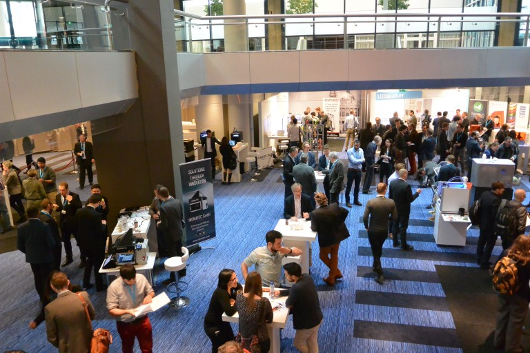
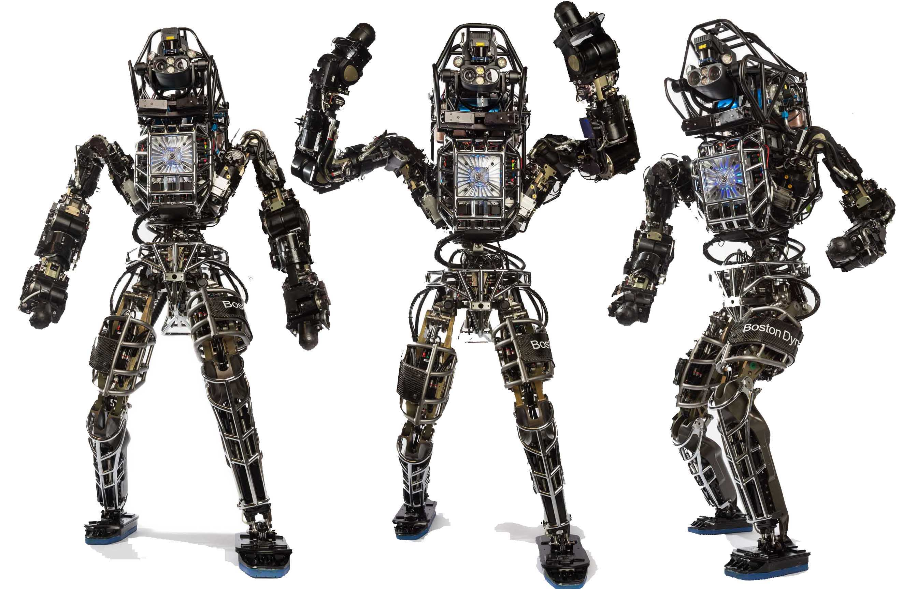

Prof. Mary Visser, Holder of the Herman Brown Chair teaches sculpture and 3D modeling at Southwestern University.
Her artwork has appeared in more than 130 exhibitions around the world including the touring e-Form Cybersculpture exhibition for the 2008 Olympic events in China. Visser received her MFA in sculpture from The Ohio State University and is Vice President of Ars Mathematica, an international organization devoted to promoting digital sculpture.
Nora Toure: Mary, could you let us know about your background and what brought you into 3D printing?
Mary Visser: I can remember making structures as a child in the piney woods of Georgia. I loved the sticky red clay and the thick forest of trees rising to the clear sky. My friends and I built many strange structures and dug tunnels through the clay earth. I would draw them and bully my playmates into building them, only leaving them at dark to go home. My mother has always had a strong influence on my life. She encouraged me to draw, sculpt and paint, buying my first art supplies. I guess she thought this would be better than digging up the earth and felling pine trees. She expected me to go to college, and so I attended OSU. I studied sculpture with the international sculptor David Black and Ceramics with many fine ceramic artists. I received my MFA in 1974. I spent all my time in the studio and it was heaven to work with so many different types of materials and processes, as well as, very fine artists.
My brother was a computer programmer and he gave me my basic understanding of binaries and the relationships between numbers and images. My first real art experience with digital systems was watching Charles Csuri create installations in Hopkins Hall using interactive sound that one could engage with to create visual movement. I found it fascinating, but my interests at that time were in developing sculptural forms that spoke to women’s issues. After graduating, I secured my present position at Southwestern University in Texas. I continued teaching and working as a ceramic sculptor creating abstract works based upon the figure.
On January 26-27, 2016, the 3rd edition of the 3D Printing Materials Conference took place at MECC Maastricht, in The Netherlands.
The conference was successful, attracting many international delegates and provided great intellectual and social interaction for the participants.
International leading speakers from renowned companies and institutions such as Harvard University, University of Wollongong, Technical University of Eindhoven, Corbion Purac Biomaterials, Innovation Centre of Polymers, SIRRIS, ACAM GmbH (Aachen Center for Additive Manufacturing), SupraPolix, 3D PPM, VU University Medical Center Amsterdam, Applied Polymer Innovations/Innofil3D, Z3DLab, FOM Institute AMOLF, LUXeXceL Group, 3DCeram and Vormvrij shared their knowledge during the two-day conference.
Find out more about the 2016 Edition!
3D printing is hot and has emerged as manufacturing technology with a thousand uses spread across a very diverse user base. The ongoing development of new materials does not only have impact on the quality of the 3D printed end product, it opens new markets and it has a positive influence on the price level of the used materials.
Fine-tuning materials. The roads to success in the 3D printing sector will depend on fine-tuning materials to the needs of each application. This fine-tuning process will involve the type and the quality, strength and costs of materials, but also the selection of marketing channels and for example packaging of the end product.
Since each user group and each application needs its own materials set, the market has huge potential: it seems that hardly a day goes by without new materials being added to the 3D printing palette. But simultaneously, it raises many associated questions: which developments can be expected in the near future? Which markets will be influenced on short term? How can materials be produced cost-efficiently?
The 3D Printing Materials Conference offers the attendee a platform on the crossroads of science, technology & business in 3D printing materials. Visit the next edition of the 3D Printing Materials Conference and seize the opportunity to share knowledge, create new partnerships and network actively. The 3D Printing Materials Conference does not only contain a conference. Attendees can also join the refreshing conversations around the exhibition, where several established companies as well as promising startups will show their innovative products and/or services.
Google’s acquisition of Boston Dynamics has taken the standards of the robot development firm to a completely new level and led to the development of a dog-like robot a few months ago.
Since then, Boston Dynamics and Google have been researching 3D printing technology, in search of ways to implement the technology to optimize and to manufacture custom parts of their robots quickly and accurately.
This week, Google and Boston Dynamics showcased their new humanoid robot called Atlas, which weighs around 156 kilograms and is 1.88 meters tall. Atlas is a self-sustaining robot, which can navigate around outdoor terrains, such as mountains and forests.
One special aspect of Atlas, is its 3D printed legs. Most of the body parts have been upgraded to mimic human parts. However, such improvements require incredible amount of detail, which is extremely time consuming and expensive to develop with traditional manufacturing methods.
Instead, Google and Boston Dynamics implemented 3D printing technology to integrate dozens of new parts, sophisticated hydraulics systems and components to make the robot more consistent, less agile and to smoothen its movements.
The new 3D printed legs, which you can see illustrated in the image below, could dramatically enhance the efficiency as well as performance of Atlas. Through the usage of the 3D printing technology, Boston Dynamics and Google improved their power to cool down and added advanced multi-material surfaces to optimize the functions of the robot and to enhance the durability of Atlas.